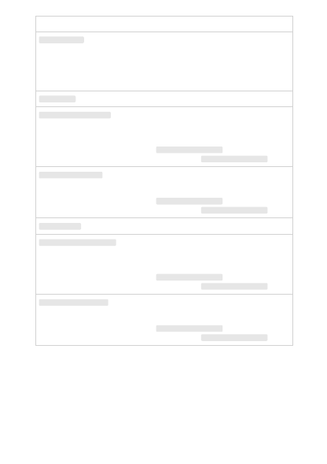

Column name
Description
elapsed_examples
The number of examples the model has seen so far, including
repeats.
Each example represents one element in that step's batch of
training data. For example, if the Batch size parameter is set to
32 in the Advanced options pane, this value increments by 32 in
each training step.
training_loss
The loss for the training batch.
training_sequence_accuracy
The percentage of completions in the training batch for which
the model's predicted tokens exactly matched the true
completion tokens.
For example, if the batch size is set to 3 and your data contains
completions [[1, 2], [0, 5], [4, 2]] , this value is set to 0.67
(2 of 3) if the model predicted [[1, 1], [0, 5], [4, 2]] .
training_token_accuracy
The percentage of tokens in the training batch that were
correctly predicted by the model.
For example, if the batch size is set to 3 and your data contains
completions [[1, 2], [0, 5], [4, 2]] , this value is set to 0.83
(5 of 6) if the model predicted [[1, 1], [0, 5], [4, 2]] .
validation_loss
The loss for the validation batch.
validation_sequence_accuracy
The percentage of completions in the validation batch for which
the model's predicted tokens exactly matched the true
completion tokens.
For example, if the batch size is set to 3 and your data contains
completions [[1, 2], [0, 5], [4, 2]] , this value is set to 0.67
(2 of 3) if the model predicted [[1, 1], [0, 5], [4, 2]] .
validation_token_accuracy
The percentage of tokens in the validation batch that were
correctly predicted by the model.
For example, if the batch size is set to 3 and your data contains
completions [[1, 2], [0, 5], [4, 2]] , this value is set to 0.83
(5 of 6) if the model predicted [[1, 1], [0, 5], [4, 2]] .
When you're done with your customized model, you can delete the deployment and
model. You can also delete the training and validation files you uploaded to the service,
if needed.
Clean up your deployments, customized
models, and training files